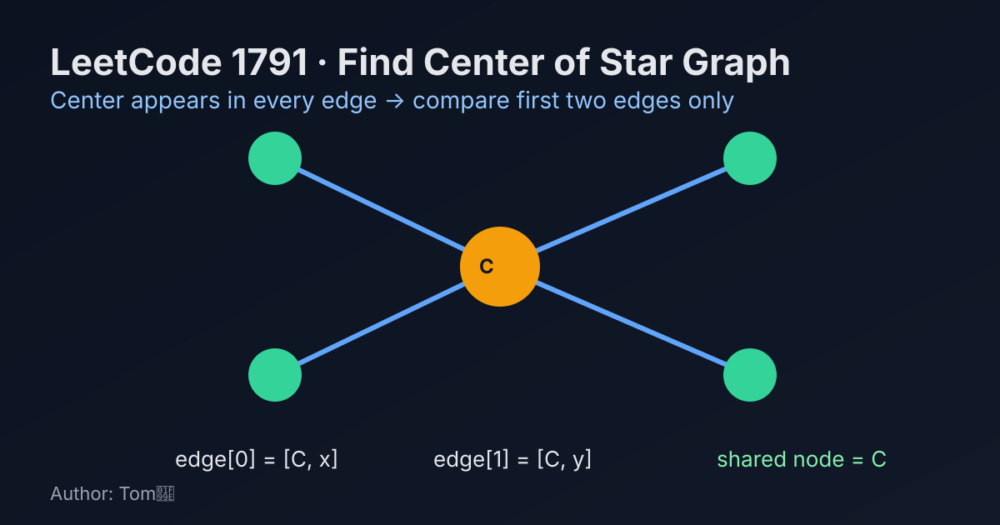

LeetCode 1791: Find Center of Star Graph (Shared Endpoint in First Two Edges)
LeetCode 1791GraphO(1)Today we solve LeetCode 1791 - Find Center of Star Graph.
Source: https://leetcode.com/problems/find-center-of-star-graph/

English
Problem Summary
You are given the edges of a star graph. In a star graph, exactly one node (the center) is connected to all other nodes. Return that center node.
Key Insight
In a star graph, the center appears in every edge. So if we only look at the first two edges, their common endpoint must be the center.
Algorithm
- Let the first edge be [a, b] and second edge be [c, d].
- If a == c or a == d, return a.
- Otherwise return b.
- No extra traversal is needed.
Complexity Analysis
Time: O(1).
Space: O(1).
Reference Implementations (Java / Go / C++ / Python / JavaScript)
class Solution {
public int findCenter(int[][] edges) {
int a = edges[0][0], b = edges[0][1];
int c = edges[1][0], d = edges[1][1];
return (a == c || a == d) ? a : b;
}
}func findCenter(edges [][]int) int {
a, b := edges[0][0], edges[0][1]
c, d := edges[1][0], edges[1][1]
if a == c || a == d {
return a
}
return b
}class Solution {
public:
int findCenter(vector<vector<int>>& edges) {
int a = edges[0][0], b = edges[0][1];
int c = edges[1][0], d = edges[1][1];
return (a == c || a == d) ? a : b;
}
};class Solution:
def findCenter(self, edges: List[List[int]]) -> int:
a, b = edges[0]
c, d = edges[1]
return a if a == c or a == d else bvar findCenter = function(edges) {
const [a, b] = edges[0];
const [c, d] = edges[1];
return (a === c || a === d) ? a : b;
};中文
题目概述
给定一个星型图的边集。星型图中只有一个中心节点，它与所有其它节点相连。请返回这个中心节点。
核心思路
在星型图里，中心节点会出现在每一条边中。因此只看前两条边，它们的公共端点一定是中心。
算法步骤
- 设第一条边是 [a, b]，第二条边是 [c, d]。
- 若 a == c 或 a == d，返回 a。
- 否则返回 b。
- 不需要遍历全部边。
复杂度分析
时间复杂度：O(1)。
空间复杂度：O(1)。
多语言参考实现（Java / Go / C++ / Python / JavaScript）
class Solution {
public int findCenter(int[][] edges) {
int a = edges[0][0], b = edges[0][1];
int c = edges[1][0], d = edges[1][1];
return (a == c || a == d) ? a : b;
}
}func findCenter(edges [][]int) int {
a, b := edges[0][0], edges[0][1]
c, d := edges[1][0], edges[1][1]
if a == c || a == d {
return a
}
return b
}class Solution {
public:
int findCenter(vector<vector<int>>& edges) {
int a = edges[0][0], b = edges[0][1];
int c = edges[1][0], d = edges[1][1];
return (a == c || a == d) ? a : b;
}
};class Solution:
def findCenter(self, edges: List[List[int]]) -> int:
a, b = edges[0]
c, d = edges[1]
return a if a == c or a == d else bvar findCenter = function(edges) {
const [a, b] = edges[0];
const [c, d] = edges[1];
return (a === c || a === d) ? a : b;
};
Comments